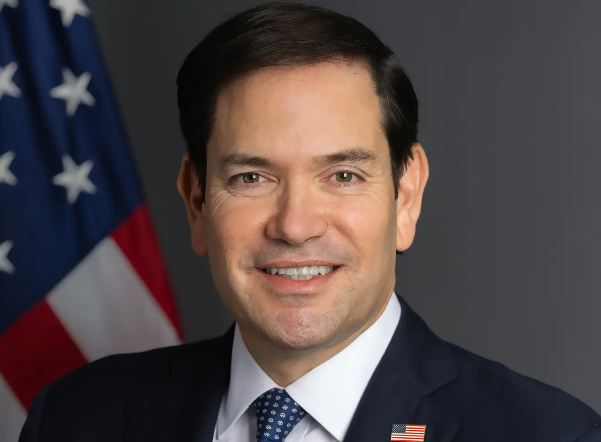

G7 foreign ministers meet in Paris on Ukraine, Iran and security, with Brazil attending as guest
The two-day talks bring together Western diplomats amid tensions with Washington; Marco Rubio represents the US and Mauro Vieira attends for Brazil.

What happened
G7 foreign ministers opened two days of talks in Paris, France, on Monday, November 9, 2026. Their agenda includes the Russia-Ukraine war, the conflict involving Iran, energy security, cyber threats and artificial intelligence. US Secretary of State Marco Rubio represents Washington. Brazil is attending as a guest country, represented by Foreign Minister Mauro Vieira, according to Folha de S.Paulo. The Associated Press reported that Rubio sees no imminent diplomatic breakthrough with Iran, while European allies are seeking clarity about US policy on Ukraine and European security. Reuters said the meeting follows US congressional elections that weakened Republicans' position in Congress. France has indicated that the gathering is not expected to produce a joint communiqué. Talks continue through Tuesday, November 10, and no agreement on the principal issues had been announced at the time of reporting.
The Crow's analysis
The meeting illustrates the difficulty of reconciling different national priorities during overlapping crises. European governments are focused on sustaining military and energy assistance for Ukraine as winter approaches and attacks on infrastructure remain a concern. Washington is also focused on Iran's negotiating conditions and energy flows through the Middle East. Brazil's participation offers a diplomatic opportunity, but guest status does not confer G7 membership or imply endorsement of every position discussed.
Counterpoint
The meeting was still under way when this report was prepared, so proposals under discussion must not be presented as adopted decisions. The anticipated lack of a joint communiqué does not necessarily mean the talks have failed. A bilateral meeting between Mauro Vieira and Marco Rubio has not been confirmed. The photograph is an official archival portrait of Rubio from January 2025, not a picture of the Paris meeting.